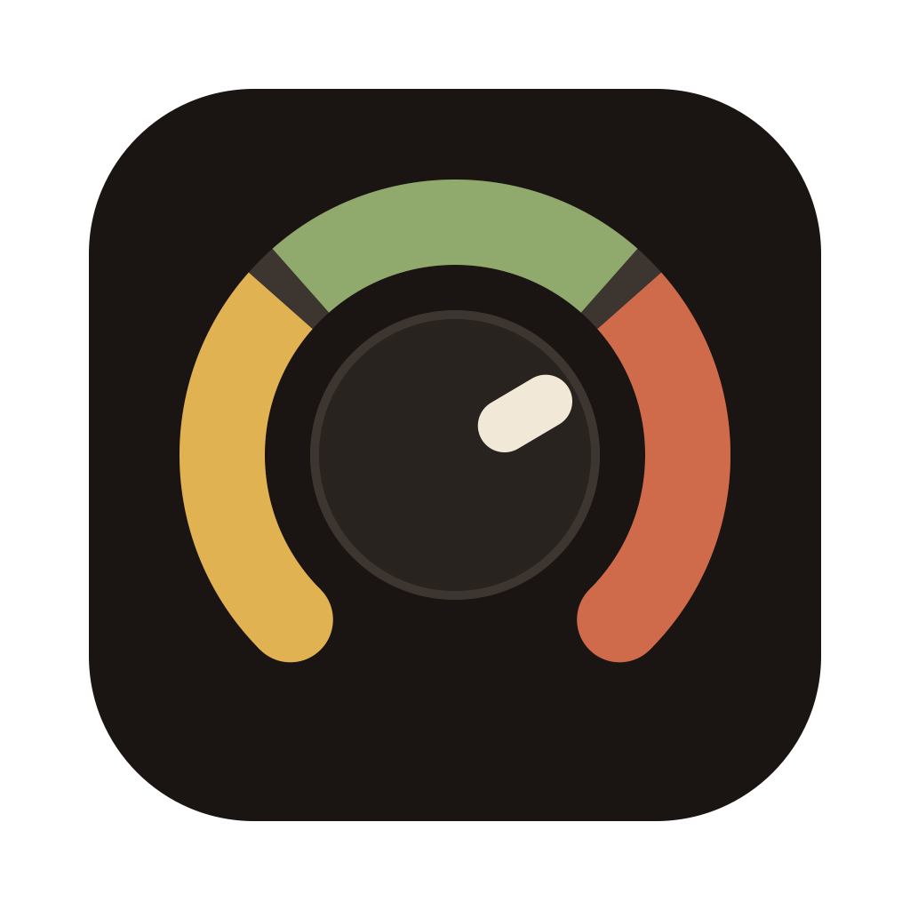

DubStemMix
Take the stems.
Cut your own
dub.
dub.
dub.
dub.
dub.
dub.
A live dub mixing console for the Akai MIDImix.
No DAW, no session to prepare, nothing to map.
FREE & OPEN SOURCE · MACOS 15+ · APPLE SILICON · TAPE DELAY · SPRING REVERB · KILLS · DUB THROWS